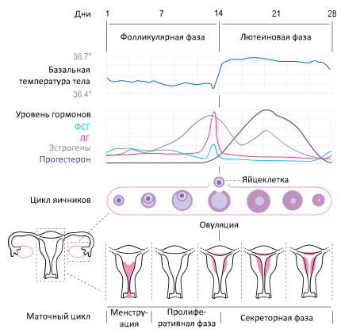
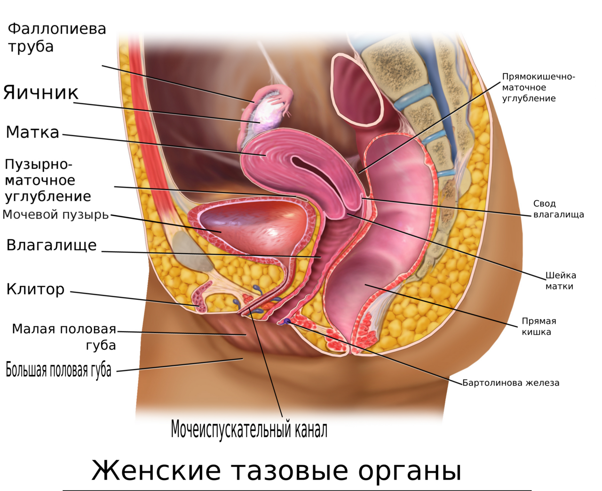
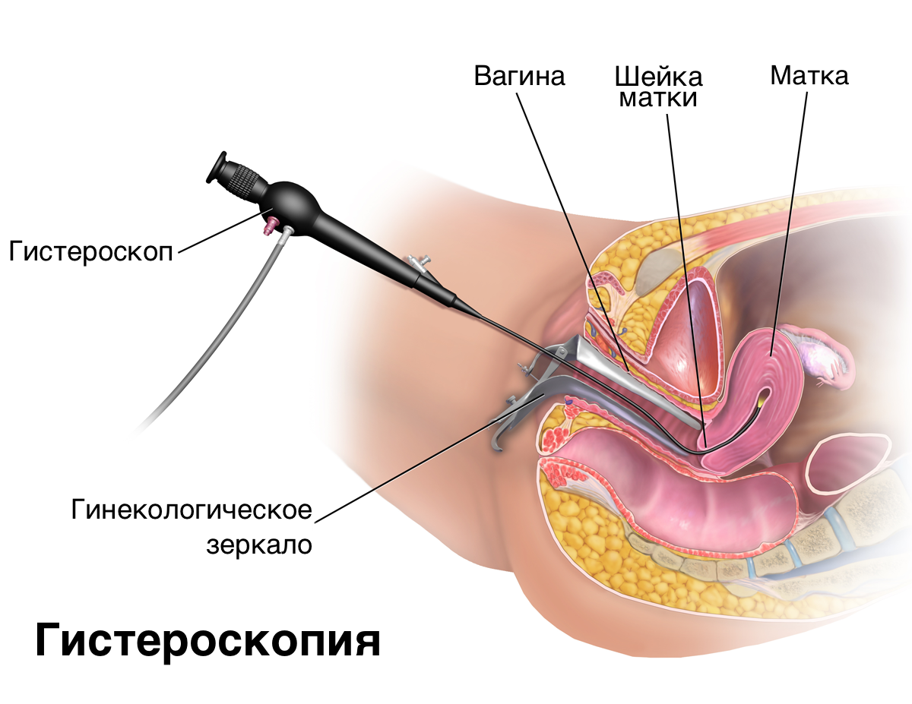

Тема 1
Анатомия женских половых органов
Слои стенки матки, шейка и зона трансформации, связочный аппарат и положение матки, кровоснабжение, лимфоотток и иннервация.
Разобранные темы по нескольким учебникам сразу.
Слои стенки матки, шейка и зона трансформации, связочный аппарат и положение матки, кровоснабжение, лимфоотток и иннервация.

Пять уровней регуляции и обратные связи между ними, пульсирующий ГнРГ, циклы яичника и матки, становление функции в пубертате и её угасание.

Как обследуют гинекологическую больную: о чём спрашивают в анамнезе, что видно в зеркалах, что даёт бимануальное исследование и какие мазки берут.

Инструментальные и эндоскопические методы в гинекологии: кольпоскопия, цитология и биопсия шейки, УЗИ и МРТ малого таза, гистероскопия и лапароскопия.

Воспалительные заболевания женских половых органов неспецифической этиологии: откуда берётся инфекция, чем сальпингит отличается от тубоовариального абсцесса, когда воспаление выходит на брюшину и чем оно кончается через годы.
Вопросы к каждой теме: с выбором ответа и открытые.
Список вопросов к экзамену по предмету.
Пока пусто.
Учебники и книги по предмету.